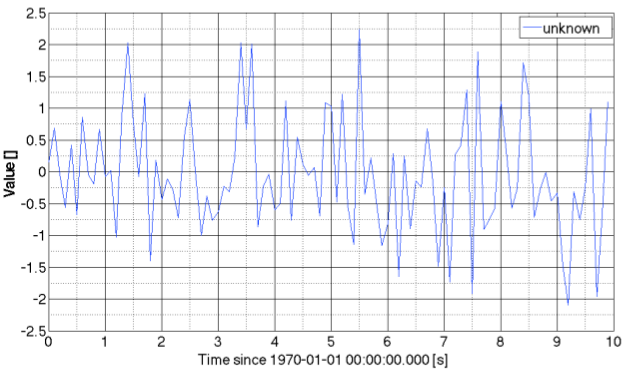
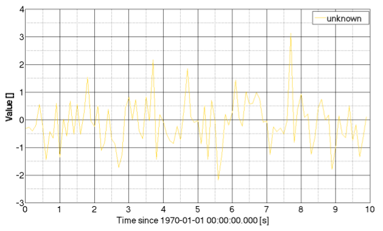
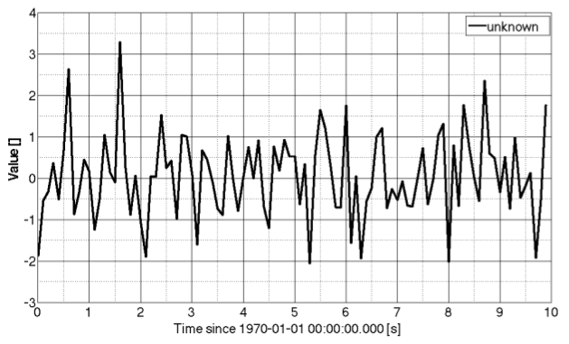
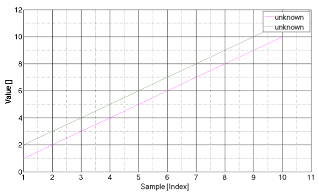
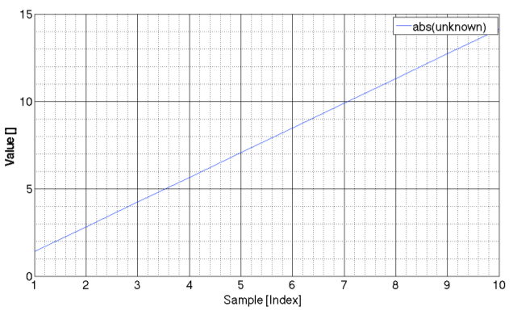
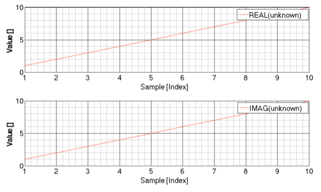
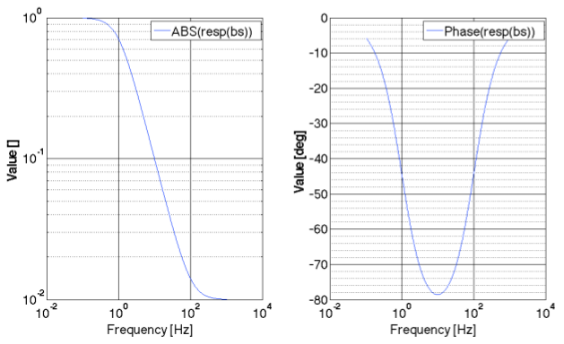
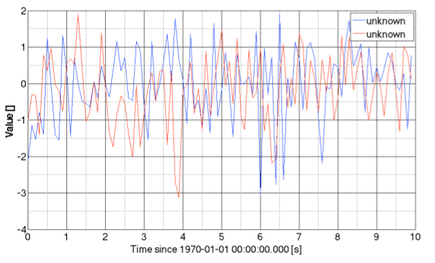
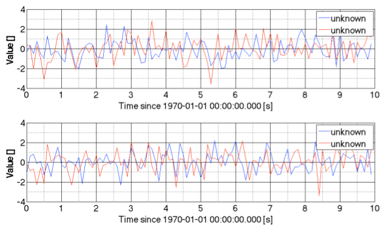
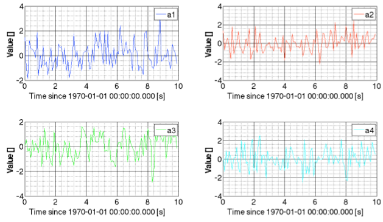

| LTPDA Toolbox™ | contents | |
This table summarizes what's new in Version 2.5.5:
| New Features and Changes | Version Compatibility Considerations | Fixed Bugs and Known Problems | Related Documentation at Web Site |
|---|---|---|---|
| Yes Details below |
Yes — Details labeled as Deprecated and removed features in descriptions of changes, below. | Bug Reports at Web site | Printable Release Notes: PDF |
This version of LTPDA is 2.5.5. This document lists the changes since V2.5.4.
This version requires MATLAB 2010a or above.
This version of LTPDA includes a vast number of improvements and bug fixes. In addition, the following significant changes are included in this release.
Default plist values are applied in all methods now and a check is done whether or not the user input keys are supported by the algorithm. You can choose the action that results if a input key is not found in the default plist (choose from ‘None’, ‘Warning’, or ‘Error’) in the LTPDA preferences (LTPDAprefs).
Parameters in parameter lists now support multiple key names. This allows us to change the names of parameter keys while remaining backwards compatible with existing scripts.
A new way of plotting has been introduced into LTPDA which leverages the figure, axes and line handles of MATLAB. You can set up your default line styles in the LTPDA preferences GUI now. One structural change here is that the ‘plotinfo’ property of a user object is no longer a plist, but is now a plotinfo object. More details are included below in the section Plotting in LTPDA - the new way.
For models which support it, the model overview generated when clicking the ‘Model Information’ documentation link will contain lists of inputs, states, outputs and parameters.
A number of static constructors for the ao class have been added to LTPDA. To create an ao with the value of the speed of light, for example, do
>> ao.c
----------- ao 01: C -----------
name: C
data: 299792458
-------- cdata 01 ------------
y: [1x1], double
dy: [0x0], double
yunits: [m s^(-1)]
------------------------------
hist: ao / ao / 976fad6449ed51fd421ad39004d225dd468e2ede
description: Speed of light in vacuum
UUID: 83da778e-b004-46cb-8690-52381120a429
--------------------------------
| Key | Default Value |
|---|---|
| c | convenient constructor of an AO containing the value of the speed of light in vacuum |
| G | convenient constructor of an AO containing the value of the universal constant of gravitation |
| R | convenient constructor of an AO containing the value of the gas constant |
| e | convenient constructor of an AO containing the value of the elementary charge |
| epsilon0 | convenient constructor of an AO containing the value of the vacuum permittivity |
| h | convenient constructor of an AO containing the value of the Planck constant |
| kB | convenient constructor of an AO containing the value of the Boltzmann's constant |
| mu0 | convenient constructor of an AO containing the value of the vacuum permeability |
The following methods and features have been deprecated:
None
The following methods and features have been removed:
For detailed information please visit the webpage: Mantis Bug Tracker
| Issue # | Status | Description |
|---|---|---|
| 568 | resolved | Can save a filter that does not load with miir('<filename>') |
| 572 | resolved | ao/detrend doesn't recognise parameter 'N' |
| 590 | resolved | Why does the whitened data have using m / sqrt(Hz) ? |
| 594 | new | Split for xydata |
| 593 | new | scale to SI prefix |
| 592 | closed | ao.iplot changes needed |
| 588 | closed | Method to retrieve objects for pipeline |
| 580 | resolved | We need a method to 'tune' the length of timeseries objects |
| 579 | resolved | An ao.toSI method is needed |
| 578 | assigned | matrix and collection should subclass ltpda_container |
| 577 | resolved | LTPDA Preferences: an option to choose error/warning for plist keys/values |
| 576 | resolved | LTPDA Plotting Preferences: 'Markersize' within plot styles |
| 575 | assigned | consolidate function terminates with an error message |
| 574 | assigned | ao from pzmodel doesn't respect the original output units |
This document, and the work behind it, is in response to various user requests to have a more powerful way of plotting data. Generally, iplot is fine, but it covers only, let’s say, 70% of use cases. In the past, if you wanted to do anything more powerful you had to drop back down to basic MATLAB figure/plot construction. While that is possible, it’s quite painful to extract all the information from LTPDA objects and get it all on the plot the way you want. So now there’s a new way, and that is the subject of this document.
Once this new way of plotting settles down and solidifies, we can write a new section of the user manual to capture the contents of this document.
The first new feature is the ability to define yourself the default plot colors and styles that will be used. This is done under the LTPDA preferences panel (LTPDAprefs). On the tab entitled “Plot Styles” you can now specify a list of styles that will be used, in order, if no other information is provided. You can also import and export these styles (to an XML file). That even allows you to edit this list by hand (which may be easier). If you choose to do that, you should be aware that the color is specified in the RGB format of java - a single negative number. To determine a number for your favourite color, you can do the following:
% Translate a MATLAB color to a Java color c1 = utils.prog.mcolor2jcolor([0.565 0.247 0.667]); c2 = utils.prog.mcolor2jcolor('r'); % Determine the RGB value v1 = c1.getRGB() v2 = c2.getRGB()
In previous times, the ‘plotinfo’ field of all ltpda_uoh objects was intended to contain a plist which could set values for how the object/data would be presented on plots. For example, you could set values for things like ‘color’, ‘linestyle’, and ‘linewidth’. These values would be read by iplot and used when creating a plot.
Now, in the current CVS version of LTPDA, the plotinfo field is always a plotinfo object - a new class of object which encapsulates these various display properties. The following table lists and describes the properties:
| plotinfo | |||
|---|---|---|---|
| Property | Description | ||
| style | Contains a (java) line-style object. See table below. | ||
| includeInLegend | A flag to indicate whether or not the owning object should be included in the legend when plotted. | ||
| showErrors | A flag to indicate whether or not the errors (should they exist) of the owning object should be plotted as errorbars on the plot. | ||
| figure | A handle to the figure on which the owning object should be plotted. | ||
| axes | A handle (or handles) on which the owning object should be plotted. | ||
| plot style [mpipeline.ltpdapreferences.PlotStyle] | |||
|---|---|---|---|
| Property | Description | ||
| linestyle | One of the valid linestyles (see utils.plottools.allowedLinestyles) | ||
| linewidth | The linewidth to use when plotting the data contained in the object which owns the plotinfo object. | ||
| color | A valid MATLAB color. | ||
| marker | A valid MATLAB marker (see utils.plottools.allowedMarkers) | ||
Creating a plotinfo object (should you wish to) can be done in the following ways:
p = plotinfo(); % creates a plotinfo with the next default style p = plotinfo(2); % creates a plotinfo with the 2nd style defined in the prefs p = plotinfo(pl) % creates a plotinfo from a plist p = plotinfo(linestyle, linewidth, color, marker); % create with these properties p = plotinfo(linestyle, linewidth, color, marker, ... includeInLegend, showErrors, axes, figure);
Normally, creating a plotinfo object is not necessary. Instead, if you have an LTPDA user object (for example, an AO) you can use convenient methods to set properties. When using the following methods, if the object doesn’t already have a defined plotinfo object, then one is created.
| Methods for setting plotinfo fifields | |||
|---|---|---|---|
| Method | Description | ||
| setPlotLineStyle | Set the line style of the plotinfo. | ||
| setPlotLinewidth | Set the linewidth of the plotinfo. | ||
| setPlotColor | Set the color of the plotinfo. | ||
| setPlotMarker | Set the marker of the plotinfo. | ||
| setShowsErrors | Set the showErrors flag. | ||
| setPlottingStyle | Set one of the defined plotting styles. | ||
| setPlotAxes | Set the axes of the plotinfo. | ||
| setPlotFigure | Set the figure of the plotinfo. | ||
Examples of how to use plotinfo objects and these associated methods will be presented in the following sections.
Given a single AO, you can tell it to plot itself by doing the following:
% build an AO a = ao.randn(10,10); % plot it on a new set of axes on a new figure using the next default plot style a.plot
This will produce a plot like the following:

Note that if you plot the object again, the next defined plot style will be used. If you want to use the same style again, you have to set the plot style to a defined state before plotting, either by resetting the internal counter (plotinfo.resetStyles()) before plotting, or by setting the style before plotting (using, for example, a.setPlottingStyle(1)).
You can plot an AO with one of you defined styles by doing the following:
% build an AO a = ao.randn(10,10); a.setPlottingStyle(4); % plot it on a new set of axes on a new figure using the next default plot style a.plot

Alternatively, you can specify simply the color, or any of the other properties:
% build an AO a = ao(1:10); a.setPlotColor('m'); a.setPlotLineStyle('--'); % plot it on a new set of axes on a new figure using the next default plot style a.plot

You can, if you so wish, build a plotinfo object and use it:
% build an AO a = ao.randn(10,10); pi = plotinfo('-', 3, 'k', 'none'); a.setPlotinfo(pi); % plot it on a new set of axes on a new figure using the next default plot style a.plot

By default, if you tell ao/plot to plot multiple objects, it will try to plot them on the same set of axes. Here’s an example of this:
% build two AOs a = ao(1:10); b = ao(2:12); % Set their colors a.setPlotColor('m'); b.setPlotColor([0.3 0.5 0.24]); % Plot them together plot(a,b)
This will produce a plot like this:

You can also chain together plotting events. Suppose you plot an object then later wish to plot an object on the same axes, you can do:
% reset the plotting styles counter plotinfo.resetStyles(); % build two AOs with particular start times a = ao.randn(10,10); a.setName(); a.setT0('2012-04-04 12:00:00') a.setToffset(5) b = ao.randn(10,10); b.setName(); b.setT0('2012-04-04 12:00:20') % Plot them together, and get the objects back with their plotinfo fields filled [a, b] = plot(a,b) % Create a third object c = ao.randn(15,10); c.setName; c.setT0('2012-04-04 12:00:10') % Set the plot axes for this object to be the same as for the first object we plotted c.setPlotAxes(a.plotinfo.axes); % Plot the third object c.plot
This will yield a plot like this:

The key here is that you tell the object ‘c’ where it should plot itself (on which axes).
As stated above, the default is to plot multiple objects on the same set of axes. Suppose you want to plot objects on subplots. Then you first create the subplot axes and tell each object where it should plot itself. Here’s an example:
% Reset the plot styles counter plotinfo.resetStyles(); % Create two AOs a = ao(1:10); b = ao(2:12); % Make a new figure with two subplots figure ah(1) = subplot(121); ah(2) = subplot(122); % Tell each AO on which subplot axes it should plot itself a.setPlotAxes(ah(1)); b.setPlotAxes(ah(2)); % Plot the objects plot(a,b)
This should yield a plot like this:

If the AO you wish to plot has complex values, the default is to plot the absolute value of the data. If you provide two axes handles, however, then the real and imaginary (for cdata or xydata) or absolute value and phase (for fsdata) will be plotted. Here’s an example:
% Reset the plot styles counter plotinfo.resetStyles(); % Create a complex valued cdata AO a = ao(complex(1:10, 1:10)); % plot magnitude a.plot % plot real and imag figure ah(1) = subplot(211); ah(2) = subplot(212); a.setPlotAxes(ah); a.plot
This will produce two plots like this:

Here’s an example of a complex valued fsdata AO:
% Reset the plot styles counter plotinfo.resetStyles(); % Create a complex valued fsdata AO a = ao.randn(1000,10); f = miir(plist('type', 'lowpass', 'fc', 1, 'fs', 10)); af = a.filter(f); out = af + 0.1 * ao.randn(1000,10); T = tfe(a, out, plist('navs', 4)); % Create two subplots figure ah(1) = subplot(211); ah(2) = subplot(212); % Set the axes T.setPlotAxes(ah) % Plot the transfer function T.plot
This gives a plot like this:

Here’s an example of a complex valued fsdata AO:
In order to plot objects other than AOs, there needs to be a plot method defined. So far we have a plot method for all subclasses of ltpda_tf (pzmodel, mfir, miir, rational, parfrac). So you can now do:
% Reset the plot styles counter plotinfo.resetStyles(); % Create a pzmodel p = pzmodel(1, 1, 100); % Plot mag and phase figure ah(1) = subplot(121); ah(2) = subplot(122); p.setPlotAxes(ah); p.plot
Which yields:

Now that you can specify the axes on which objects should appear, you can do very complex plots. Here’s an example where the axes are set out and then populated.
% Reset the plot styles counter plotinfo.resetStyles(); % Create two AO time-series a1 = ao.randn(100, 10); a1.setName(); a2 = ao.randn(100, 10); a2.setName(); % compute PSDs [S_a1, S_a2] = psd(a1, a2); % make figure figure topLeft = subplot('Position', [0.1 0.6 0.35 0.35]); topRight = subplot('Position', [0.55 0.6 0.35 0.35]); bottom = subplot('Position', [0.1 0.12 0.8 0.35]); % set axes a1.setPlotAxes(topLeft); a2.setPlotAxes(topRight); S_a1.setPlotAxes(bottom); S_a2.setPlotAxes(bottom); % plot objects plot(a1, a2, S_a1, S_a2)
This will produce a figure like this:

A plot method is defined on the collection class. The way it works is to try to plot all objects in the collection on the same set of axes. If the collection object has no plotinfo, or if no axes are defined in the plotinfo, then a new set of axes are created on a new figure. If the collection does have a defined set of axes in its plotinfo, then all objects are plotted on that set of axes. This works by setting the axes to each object in the collection, then telling the object to plot itself. This relies on there being a defined plot method for each class of object in the collection.
Here’s an example of plotting a collection containing two AOs on a single set of axes:
% Reset the plot styles counter plotinfo.resetStyles(); % Create two AO time-series a = ao.randn(10,10); b = ao.randn(10,10); % Create a collection containing these AOs c = collection(a, b); % Plot the collection c.plot
This should produce the following figure:

You can also plot collections on subplots:
% Reset the plot styles counter plotinfo.resetStyles(); % Create 4 AOs a = ao.randn(10,10); b = ao.randn(10,10); c = ao.randn(10,10); d = ao.randn(10,10); % Collect them into 2 collections c1 = collection(a, b); c2 = collection(c, d); % Create two subplots figure ah(1) = subplot(211); ah(2) = subplot(212); % Set the collection axes c1.setPlotAxes(ah(1)); c2.setPlotAxes(ah(2)); % Plot the collections plot(c1, c2)
This will give a plot like this:

In order to create complex arrays of subplots, you can use matrix objects. The matrix class has a plot method defined on it, allowing you to layout your objects in any way you wish.
Here is an example of plotting two AOs side-by-side using a matrix object:
% Create two AOs a = ao.randn(10,10); b = ao.randn(10,10); a.setName; b.setName; % Collect them into a matrix m = matrix(a, b) % Plot the matrix m.plot
This will produce a figure like this:

If you want the plots the other way around, you can just make a matrix of a different shape:
% Create two AOs a = ao.randn(10,10); b = ao.randn(10,10); a.setName; b.setName; % Collect them into a matrix m = matrix([a; b]) % Plot the matrix m.plot
Producing a plot like this:

% Create two AOs a1 = ao.randn(10,10); a1.setName; a2 = ao.randn(10,10); a2.setName; a3 = ao.randn(10,10); a3.setName; a4 = ao.randn(10,10); a4.setName; % create a 2x2 matrix m1 = matrix([a1 a2; a3 a4]) m1.plot

By using a combination of collections and matrix objects, you can create more complex arrangements:
a1 = ao.randn(10,10); a1.setName; a2 = ao.randn(10,10); a2.setName; a3 = ao.randn(10,10); a3.setName; c1 = collection(a1) c2 = collection(a2, a3); m = matrix([c1; c2]) m.plot

a1 = ao.randn(10,10); a1.setName; a2 = ao.randn(10,10); a2.setName; a3 = ao.randn(10,10); a3.setName; c1 = collection(a1) c2 = collection(a2, a3); m = matrix([c1; c2]) m.plot

| |
Version 2.6 LTPDA Toolbox Software | Version 2.5.4 LTPDA Toolbox Software | |
©LTP Team